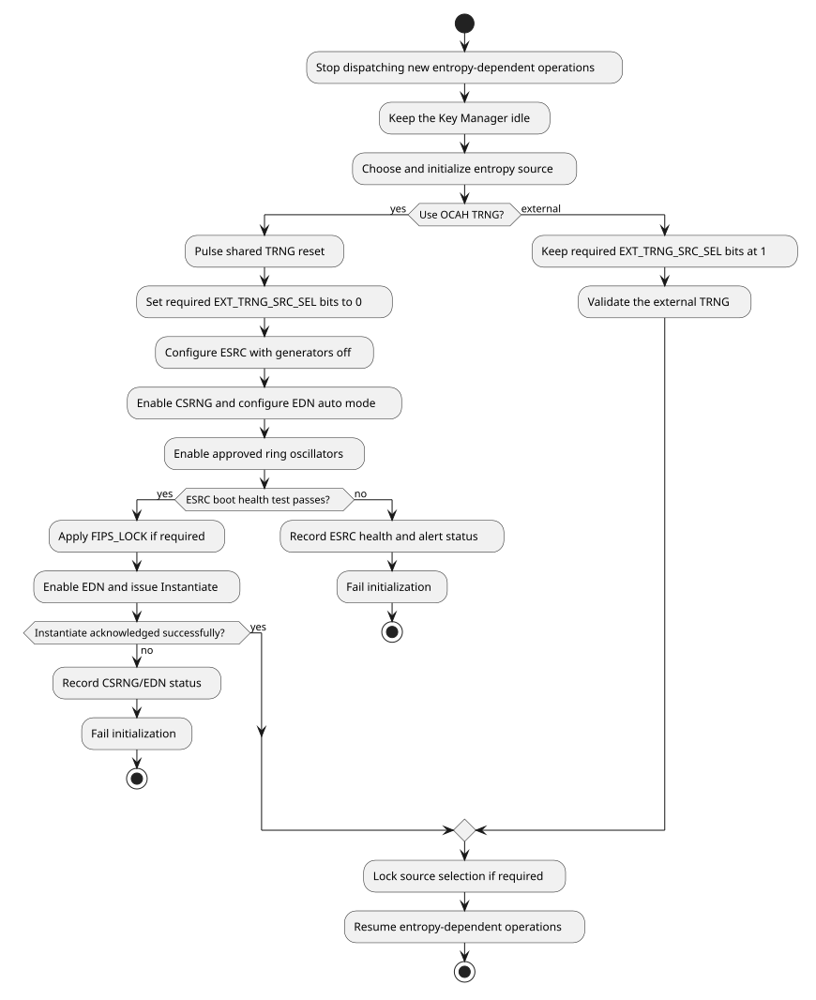

1. SEP Programming Guide
This Chapter details the bring-up process and run-time operation of the SEP for the purposes of firmware development, with references to the Production SEP ROM.
The Appendix contains a detailed reference to the Production SEP ROM implementation.
1.1. Bring-up
1.1.1. Address Map
See the Memory Map chapter of the Technical Reference Manual for the SEP CPU’s logical address-space layout and the full generated component address map.
1.1.2. Early Initialization
The SEP CPU cold-reset vector is 0x1004_0000, corresponding to the start of
BL0 ROM.
The production BL0 ROM linker script — hw/sys/sep/bootrom/prod/link/rom.ld
places the executable .text and read-only data .rodata sections in ROM. The
.data section and other runtime data are included in the ROM image, but have
runtime addresses within DCCM at 0xC004_0000. This data is copied by BL0 ROM
into DCCM by early assembly code in vector.S. The stack and the .bss section
reside only in DCCM. Unlike the SMC SRAM, ICCM and DCCM do not require
initialization.
1.1.3. NMI Vector Programming
The Security Processor (SEP) runs a VeeR-EL2 core whose Non-Maskable Interrupt
is driven by the watchdog timer bark (sep.sv wires nmi_int to
intr_wdog_timer_bark). When the NMI asserts, the core jumps to the address
held in the SEP_NMI_VEC register of the sep_cpu_ctrl block (offset 0x180).
Software reads and writes SEP_NMI_VEC as a byte address. The register’s
nmi_vec field occupies bits 31:1, so bit 0 is reserved and always reads back
as zero; the hardware imposes no stricter alignment than that. The reference DV
firmware nevertheless aligns its NMI trampoline to 256 bytes, which the linker
script enforces.
|
The
If a bark arrives while the reset value is still in place, the core jumps to
|
Because SEP_NMI_VEC_LOCK is write-one-to-set and sticky until reset, the
vector cannot be repointed once locked. Firmware that needs to install a
different handler after lock must do so through its own indirection — the
reference firmware keeps a runtime-writable handler pointer that the trampoline
dispatches through, so the locked vector always targets the trampoline.
If the watchdog bite threshold is also enabled, an unserviced bark still escalates to the watchdog reset path and resets the SEP. A mis-programmed vector therefore degrades to a watchdog reset rather than a silent hang, but it does so only after the bite interval and without running any handler.
1.1.4. Configuration Straps
BL0 selects startup options, such as primary or secondary chiplet operation and
normal or recovery boot, from configuration straps on SMC GPIO pins. The board
and boot firmware define which option each pin carries. A strap latch follows
its pad while cold reset is asserted and holds the level when cold reset is
released, so read the captured levels through the GPIO control registers after
reset release, as described in [smc-gpio-straps]. strap_valid indicates
that a pin supports capture, not that reset has completed.
1.1.5. Software Reset of the Cryptographic Engines
SEP_RESET_CTRL.SW_RESET_N resets to 0x7E: the Key Manager is held in reset
and OTBN, AES, HMAC, KMAC, the TRNG and Adams Bridge are released. To reset one
engine:
-
Make sure no operation the reset would corrupt is in flight, or accept that it is aborted.
-
Clear the engine’s bit with a read-modify-write that preserves the other bits. Hardware isolates the engine’s AXI paths, drains accepted transactions, and only then asserts the reset; new accesses on those paths complete with SLVERR and read data
0x1501A7ED. -
Set the bit again. Reset and isolation release together.
// SEP reset control register address.
// In SEP-local address space.
#define SEP_RESET_CTRL_REG_SW_RESET_N 0x10803000
// SW_RESET_N bits; 0 holds the engine in reset.
#define SW_RESET_N_KM 0x01
#define SW_RESET_N_OTBN 0x02
#define SW_RESET_N_AES 0x04
#define SW_RESET_N_HMAC 0x08
#define SW_RESET_N_KMAC 0x10
#define SW_RESET_N_TRNG 0x20
#define SW_RESET_N_ABR 0x40// Hold the engines in `mask` in reset, preserving the other bits.
void sep_engine_reset_assert(uint32_t mask) {
uint32_t val = read32(SEP_RESET_CTRL_REG_SW_RESET_N);
write32(SEP_RESET_CTRL_REG_SW_RESET_N, val & ~mask);
}
// Release the engines in `mask`, preserving the other bits.
void sep_engine_reset_release(uint32_t mask) {
uint32_t val = read32(SEP_RESET_CTRL_REG_SW_RESET_N);
write32(SEP_RESET_CTRL_REG_SW_RESET_N, val | mask);
}Releasing the Key Manager from reset starts it; the SEP host can still reach the
SEP-to-KM mailbox while the Key Manager is in reset, because the mailbox’s
SEP-facing side is in the Key Manager’s cold domain. The Key Manager can also
restart itself by writing its SOFT_RST_CODE register, which takes the same
warm-reset path without isolation.
The TRNG bit resets the whole internal entropy chain. Follow Failure Handling and Recovery rather than toggling it on its own.
A watchdog restart resets the SEP CPU but not the cryptographic engines or
their SW_RESET_N requests. Recovery firmware must account for engine state
that survived the restart, by resetting the engines or checking their state,
before submitting new work.
1.1.6. Programmable Interrupt Controller (PIC)
The
EL2 Programmer’s Reference Manual
defines the VeeR EL2 core and PIC programming model. The PIC numbers external
interrupt sources from 1; source 0 does not exist. Program source N through the per-source arrays, each indexed at
N * 4 from its region base:
-
meipl[N](PIC base+0x0000) sets its priority; -
meie[N](+0x2000) enables it; -
meigwctrl[N](+0x4000) configures its gateway; and -
meigwclr[N](+0x5000) clears its gateway’s pending state.
Pending status is the bitmap meip at +0x1000: source N is bit N % 32 of
meip[N / 32]. Never program entry 0 of the per-source arrays; it is reserved,
reads as zero and discards writes. Register tests that walk the PIC map must
skip it. The
SEP CPU Interrupt Vector Map
in the Technical Reference Manual lists the sources. Some of them need
specific service:
| Source | Service |
|---|---|
39, entropy pool pointer fault |
Level-sensitive with no write-one-to-clear.
Mask the source, or scrub the pool with |
40, token match fault |
Stays asserted until reset, with no write-one-to-clear.
Read |
41, 42, DMA register-path and host-path faults |
Write |
43, peripheral register-bridge fault |
Read |
// PIC register addresses, for source `n`.
// In SEP-local address space.
#define PIC_BASE 0xC0080000
#define PIC_REG_MEIPL(n) (PIC_BASE + 0x0000 + ((n) * 0x4))
#define PIC_REG_MEIE(n) (PIC_BASE + 0x2000 + ((n) * 0x4))
#define PIC_REG_MEIGWCTRL(n) (PIC_BASE + 0x4000 + ((n) * 0x4))
#define PIC_REG_MEIGWCLR(n) (PIC_BASE + 0x5000 + ((n) * 0x4))
// Register constants.
#define PIC_MEIGWCTRL_ACTIVE_LOW 0x1
#define PIC_MEIGWCTRL_EDGE 0x2// Enable source `n` (1 or above) at `priority`. `gwctrl` selects the
// gateway's polarity and type. The core takes the interrupt only while
// `mie.MEIE` is set and `priority` is above the `meipt` threshold.
void pic_enable_source(unsigned n, uint32_t priority, uint32_t gwctrl) {
write32(PIC_REG_MEIGWCTRL(n), gwctrl);
write32(PIC_REG_MEIGWCLR(n), 0);
write32(PIC_REG_MEIPL(n), priority);
write32(PIC_REG_MEIE(n), 1);
}1.1.7. Memory Error Handling
Corrected ICCM and DCCM errors are counted in two counters whose request is
delivered as MCEIP (mcause = 0x8000_001E). Bits [26:0] of each counter
are the count and bits [31:27] a threshold exponent: the request rises when
the count reaches 2threshold. To use the interrupt:
-
Program a threshold before enabling the interrupt. Counters and thresholds reset to zero, and a zero threshold raises the request on the first corrected error.
-
Set
mie[30](MCEIE), which is clear at reset; until then, corrected errors are counted silently. -
In the handler, read both counters to attribute the error, then write the one that tripped.
MCEIPfollows the comparator and has no write-one-to-clear, so returning without dropping the count below the threshold re-enters the handler. To clear the count while keeping thresholdN, writeN << 27.
A low threshold reports a degrading SRAM early at the cost of an interrupt per error; a high one lets transient flips accumulate before firmware is told.
Uncorrectable errors trap on the instruction that hit them, as an instruction,
load or store access fault, or as an NMI on the fast-interrupt path. On an
access fault, read mscause (0x7FF): 1 means uncorrectable ECC, which
mcause alone does not distinguish from a bad pointer. Treat the error as fatal
for the affected context. Do not resume the trapping instruction, since a retry
re-reads the same corrupted location; reset or quarantine the affected memory
instead.
1.2. OCAH TRNG Bring-up
The SEP has three entropy streams: the Key Manager, the AES/KMAC/OTBN group, and
the fabric entropy pool. SEP_CPU_CTRL.EXT_TRNG_SRC_SEL selects the source of
each stream independently:
-
bit 0 selects the Key Manager stream;
-
bit 1 selects the AES/KMAC/OTBN stream; and
-
bit 2 selects the fabric entropy-pool stream.
A bit value of 0 selects the internal ESRC → CSRNG → EDN chain. A bit value of 1 selects the corresponding external TRNG stream and bypasses the internal chain for that stream.
|
The OCAH internal entropy source has not been certified. Consequently,
The CSRNG and EDN blocks are derived from OpenTitan. OpenTitan describes CSRNG as compatible with NIST SP 800-90A and AIS31 and implements the approved CTR_DRBG construction, but this is not a certification of the OCAH integration. NIST CAVP validation applies to a specific implementation and operational environment. No CAVP or FIPS 140 validation is claimed for the OCAH entropy chain. See the OpenTitan CSRNG specification and NIST CAVP. |
EXT_TRNG_SRC_SEL_LOCK.LOCK makes the selection read-only until SEP reset.
Production firmware should lock the selection after it has verified that the
chosen source is operational. An external-TRNG integration must initialize and
test that device through its platform-specific control interface; the OCAH
sequence below applies only to streams firmware explicitly changes to 0.
1.2.1. Bring-up Sequence at a Glance

1.2.2. Internal Entropy-chain Initialization
The entropy source, CSRNG and EDN are OpenTitan IP. The OpenTitan entropy source, CSRNG and EDN programmer’s guides give the full programming sequence for each block. The sequence below composes them for the OCAH chain.
Use generated register definitions and named fields rather than copying complete
register literals. Several control fields use MuBi4 encodings, for which true is
0x6 and false is 0x9.
-
Prevent new entropy-dependent operations during initialization. On first boot, initialize entropy before accepting crypto work; the Key Manager is held in software reset, which keeps it idle. A runtime recovery must wait until KM is idle, or hold it in software reset, before pulsing the TRNG reset. AES, KMAC, and OTBN may stall until fresh entropy is available, or, after each is idle, firmware may hold them in software reset to abort their operations.
-
Reset the internal entropy chain by clearing and then setting
SEP_RESET_CTRL.SW_RESET_N.trng_sw_rst_nwith read-modify-write operations that preserve the other reset bits. This reset covers ESRC, CSRNG, EDN, their control-plane adapters, buffered internal entropy, and the fabric entropy pool.ESRC.CTRL[0]is reserved and is not a reset control. -
Select the internal source by clearing each required bit in
EXT_TRNG_SRC_SEL. This mux programming is a required part of OCAH TRNG initialization; the reset value deliberately continues to select the external source. -
Disable
ESRC.RING_OSC_ENABLE.ENABLEwhile programming the entropy-source policy. Program the approved sampling, health-test, FIFO, conditioning, and module-enable fields. In particular, the intended standards-aligned profile requiresCTRL.MODULE_ENABLE=1, the approved health-test thresholds and window, entropy-compressor bypass disabled, and SHA-256 whitening enabled. WriteHT_WATERMARK_NUMbefore togglingMODULE_ENABLEwhen the health-test watermark needs a deterministic baseline: the selector does not clear the shared watermark, and the 0-to-1 transition re-arms it. -
Enable the CSRNG with
CSRNG.CTRL.ENABLE. LeaveSW_APP_ENABLE,READ_INT_STATE, andFIPS_FORCE_ENABLEfalse unless the security policy explicitly requires those diagnostic interfaces. -
Configure EDN continuous-operation mode while EDN is disabled:
-
program
RESEED_CMDandGENERATE_CMDwith commands that request entropy from CSRNG; -
program
MAX_NUM_REQS_BETWEEN_RESEEDS; and -
set
BOOT_REQ_MODEfalse andAUTO_REQ_MODEtrue.
-
-
Enable the approved ring oscillators and sample clocks in
ESRC.RING_OSC_ENABLE. -
Poll
ESRC.MAIN_SM_STATUS.BOOT_PHASE_DONEwith a bounded timeout. While waiting, fail initialization ifMAIN_SM_STATUS.ALERT,MAIN_SM_STATUS.ERR, orINTR_STATUS.PERSISTENT_FAILUREasserts.BOOT_PHASE_DONEproves that the startup health-test gate opened; it does not by itself prove that CSRNG accepted a complete seed. -
If required by the security policy, set
ESRC.FIPS_LOCK.LOCKafter startup passes and before exposing entropy to consumers. The lock freezes the certified ESRC configuration until the internal entropy chain is reset.DEBUG_CTRLintentionally remains outside this lock; the platform must separately restrict any externally routed debug-observation signal. To close theFIFO_RDATAread path on a locked part, first clearFIFO_CTRL.ENABLE, readFIFO_RDATAuntilFIFO_STATUS.LEVELis zero, and only then setFIPS_LOCK.LOCK.FIFO_CTRL.ENABLEgates only the FIFO write, so the DRBG seed stream continues either way. -
Enable EDN with
EDN_ENABLE=true,AUTO_REQ_MODE=true,BOOT_REQ_MODE=false, andCMD_FIFO_RST=false. -
Wait for both
EDN.SW_CMD_STS.CMD_RDYandCMD_REG_RDY, then write an Instantiate command with no additional data toEDN.SW_CMD_REQ. PollCMD_ACKorINTR_STATE.EDN_CMD_REQ_DONEwith a bounded timeout and requireCMD_STSto report success. -
Lock
EXT_TRNG_SRC_SELif required, then release or initialize the entropy consumers.
The EDN Instantiate acknowledgement is the software-visible readiness event:
CSRNG cannot acknowledge that command until it has accepted a complete ESRC
seed. Firmware therefore does not need a delay or a hierarchical
drbg_seed_valid probe. BOOT_PHASE_DONE remains useful for separating an
ESRC startup-health failure from a downstream CSRNG or EDN failure.
|
Do not set EDN boot-request and auto-request mode true at the same time. Boot-request mode takes precedence and remains in its completed state until firmware clears it; merely setting both modes does not transition EDN to continuous auto-request operation.
|
1.2.3. Failure Handling and Recovery
Treat entropy initialization as a fallible operation. Every poll must have a platform-defined timeout, and firmware should preserve enough status to distinguish:
-
ESRC startup-health failure (
MAIN_SM_STATUS,HEALTH_TEST_STATUS, andINTR_STATUS); -
CSRNG command, exception, recoverable-alert, or fatal-alert failure; and
-
EDN command, recoverable-alert, or fatal-alert failure.
The boot policy must define whether any such failure stops secure boot or enters a platform recovery flow. Continuing into an entropy-dependent operation is not recovery: the consumer can wait indefinitely for entropy.
For a runtime restart of the internal chain:
-
Stop dispatching new entropy-dependent operations. The Key Manager must be idle before the TRNG reset is asserted: wait until it is not consuming entropy, or hold it in software reset. If policy requires aborting AES, KMAC, or OTBN in-flight work, wait for each to become idle, save
SW_RESET_N, and hold those consumers in reset. -
Clear
trng_sw_rst_n; hardware drains accepted control transactions, isolates the three internal TRNG register ports, and clears buffered internal and post-mux entropy before asserting reset. -
Set
trng_sw_rst_n. -
Repeat the complete internal initialization sequence, including the bounded ESRC startup poll and acknowledged EDN Instantiate command.
-
Restore any consumer-reset state saved in the first step after initialization succeeds.
The native EDN boundary uses request/acknowledge, not valid/ready. During TRNG reset the post-mux adapters suppress acknowledgements and discard buffered entropy. A request already asserted by AES, KMAC, or OTBN remains asserted and is serviced with fresh entropy after the adapter and internal chain restart. Resetting those consumers is an operation-abort policy, not a prerequisite for the coordinated TRNG reset.
The Key Manager AXI-Stream has no post-mux adapter, so TRNG reset does not scrub it. A reset while the DRBG sampler is requesting or assembling a word can mix leftover bytes into the next DATA read or raise a stream error. The Key Manager must be idle before the SEP host asserts the TRNG reset.
Do not try to recover only ESRC with CTRL[0]. A shared TRNG reset invalidates
the entire internal chain.
Changing EXT_TRNG_SRC_SEL takes effect immediately, with no switch-complete
handshake and no flush of previously queued words: an unselected internal
endpoint keeps its queued data, and an unselected external input is discarded.
Quiesce the consumers before changing the selection, and account for the
buffered words when choosing between a source change and a TRNG reset. Resetting
the internal TRNG does not unlock EXT_TRNG_SRC_SEL_LOCK.
1.3. General Operation
1.3.1. SEP to Key Manager Mailbox
The SEP and Key Manager communicate through a shared mailbox, which is
implemented with two FIFOs. Messages consist of an arbitrary number of
32-bit words, which are delimited by writing the 1 to the WRITE_SEPARATOR
register before the last word of the message is written. When reading messages,
the message is delimited by checking the outbound_separator field (bit 25) of
the SEP_STATUS register.
The FIFO directions should be read as relative to the Key Manager — the SEP writes messages to the inbound (from the KM’s perspective) FIFO and reads messages from the outbound (from the KM’s perspective) FIFO.
The SEP to Key Manager mailbox can also be configured to raise interrupts when either the inbound or the outbound FIFOs have overflowed, or have space available for writing and reading respectively.
|
The SMC and SEP address maps contain additional mailboxes for communication between each other. The SMC and other SEP mailboxes implement a different register interface from the SEP to KM mailbox register interface described here. Unlike the other mailboxes, this mailbox is internal to the SEP/KM and is inaccessible from the other agents on the system. |
// Key Manager mailbox register addresses.
// In SEP-local address space.
#define KM_MAILBOX_BASE 0x10920000
#define KM_MAILBOX_REG_WRITE_DATA (KM_MAILBOX_BASE + 0x0)
#define KM_MAILBOX_REG_WRITE_SEPARATOR (KM_MAILBOX_BASE + 0x4)
#define KM_MAILBOX_REG_READ_DATA (KM_MAILBOX_BASE + 0x8)
#define KM_MAILBOX_REG_STATUS (KM_MAILBOX_BASE + 0xC)
#define KM_MAILBOX_REG_IRQ_STATUS (KM_MAILBOX_BASE + 0x10)
#define KM_MAILBOX_REG_IRQ_ENABLE (KM_MAILBOX_BASE + 0x14)
#define KM_MAILBOX_REG_CTRL (KM_MAILBOX_BASE + 0x18)
// Key Manager mailbox register constants.
#define KM_MAILBOX_STATUS_INBOUND_FULL 0x2
#define KM_MAILBOX_STATUS_OUTBOUND_EMPTY 0x4
#define KM_MAILBOX_STATUS_OUTBOUND_SEPARATOR 0x2000000// Send an arbitrary length message to the Key Manager.
void km_mailbox_send(const uint32_t *message, size_t count) {
for (size_t i = 0; i < count; i++) {
// Poll until we can write.
while (read32(KM_MAILBOX_REG_STATUS) & KM_MAILBOX_STATUS_INBOUND_FULL);
if (i == count - 1) {
// Writing `1` to the `WRITE_SEPARATOR` register
// signals that the next written word terminates
// the message. This is automatically cleared
// after writing `WRITE_DATA`.
write32(KM_MAILBOX_REG_WRITE_SEPARATOR, 0x1);
}
write32(KM_MAILBOX_REG_WRITE_DATA, message[i]);
}
}
// Receive an arbitrary length message from the Key Manager.
// The received message is stored in the array pointed to by `words`.
// At most `capacity` words are written. Whether the message has
// ended is stored in `finished`.
// This function only completes once either `capacity` words have
// been read, or the message terminates before filling the buffer.
// Returns the number of read words, which may be less than
// `capacity` if the message terminates before filling the buffer.
size_t km_mailbox_receive(uint32_t *words, size_t capacity, bool *finished) {
size_t count = 0;
*finished = false;
while (count < capacity) {
// Poll until a word is available to read.
while (read32(KM_MAILBOX_REG_STATUS) & KM_MAILBOX_STATUS_OUTBOUND_EMPTY);
// Read message word and increment count.
words[count++] = read32(KM_MAILBOX_REG_READ_DATA);
// Was this the last word of the message?
*finished = read32(KM_MAILBOX_REG_STATUS)
& KM_MAILBOX_STATUS_OUTBOUND_SEPARATOR;
if (*finished) {
break;
}
}
// Out of capacity, or message has ended.
return count;
}|
The sample implementations provided are blocking on space being available to read/write in the FIFOs. A more performant implementation should be interrupt-driven to keep the FIFOs filled, without blocking the SEP’s other operations. See also the DV SEP firmware driver |
1.3.2. Watchdog
The SEP watchdog is an OpenTitan Always-On Timer. Program it following the
OpenTitan Always-On Timer programmer’s guide,
which gives the full watchdog initialization, servicing and locking sequence.
The OCAH integration connects the watchdog as follows. Firmware must service it
periodically by resetting its count, proving that the SEP CPU is still making
progress. If the count reaches the bark threshold, the watchdog raises the NMI,
which jumps through SEP_NMI_VEC; program and lock that vector first, as
NMI Vector Programming describes. If the count reaches the bite
threshold, the watchdog requests a SEP CPU reset. wdt_debug_sleep_mode_i
selects whether the timer keeps counting while the CPU is halted in debug.
// Watchdog register addresses.
// In SEP-local address space.
#define WDOG_BASE 0x10801000
#define WDOG_REG_REGWEN (WDOG_BASE + 0x18)
#define WDOG_REG_CTRL (WDOG_BASE + 0x1C)
#define WDOG_REG_BARK_THOLD (WDOG_BASE + 0x20)
#define WDOG_REG_BITE_THOLD (WDOG_BASE + 0x24)
#define WDOG_REG_COUNT (WDOG_BASE + 0x28)
// Register constants.
#define WDOG_CTRL_ENABLE 0x1// Start the watchdog and lock its configuration until reset.
// Program and lock SEP_NMI_VEC before calling this.
void watchdog_start(uint32_t bark_count, uint32_t bite_count) {
write32(WDOG_REG_CTRL, 0);
write32(WDOG_REG_COUNT, 0);
write32(WDOG_REG_BARK_THOLD, bark_count);
write32(WDOG_REG_BITE_THOLD, bite_count);
write32(WDOG_REG_CTRL, WDOG_CTRL_ENABLE);
// Writing 0 to REGWEN locks CTRL and both thresholds.
write32(WDOG_REG_REGWEN, 0);
}
// Service the watchdog before the count reaches the bark threshold.
void watchdog_pet(void) {
write32(WDOG_REG_COUNT, 0);
}1.3.3. DMA
The SEP DMA is the OpenTitan DMA controller. Program it following the
OpenTitan DMA programmer’s guide,
which gives the full programming sequence; the OCAH integration differs as
described here. Use address-space ID 0x7, the
core’s internal host port, for both source and destination, with both high
address registers zero; the other address spaces are tied off and never
complete. Reachability is governed by the SEP fabric and filters.
For one contiguous memory-to-memory copy:
-
Wait until the previous operation has finished and configuration is writable (
CFG_REGWEN). Configure a valid enabled-memory base/limit pair and setRANGE_VALIDbefore starting; observeRANGE_REGWENif firmware has locked that configuration. -
Write
SRC_ADDR_LOandDST_ADDR_LO, clear both high address registers, and select0x7for both fields inADDR_SPACE_ID(0x77combined). -
Set
TRANSFER_WIDTHto 0, 1 or 2 for 1, 2 or 4 bytes respectively. Align both addresses to that width. EnableINCREMENTand clearWRAPin bothSRC_CONFIGandDST_CONFIG. -
Set
CHUNK_DATA_SIZEandTOTAL_DATA_SIZEto the same nonzero byte count. -
Write
CONTROLwithOPCODE=0(copy),HARDWARE_HANDSHAKE_ENABLE=0,INITIAL_TRANSFER=1andGO=1. -
Check
STATUS.ERRORandERROR_CODEwhile waiting forSTATUS.DONE, with a bounded wait. For interrupt-driven operation, enable the required completion and error sources and acknowledgeINTR_STATE. The status completion and error bits are write-one-to-clear.
For hashing, select opcode 1, 2 or 3 for SHA-256, SHA-384 or SHA-512 and use
4-byte transfers. Set INITIAL_TRANSFER on the first transfer of the message,
and read the digest only when STATUS.SHA2_DIGEST_VALID is set. DIGEST_SWAP
controls byte order within each digest register, not register order.
Only handshake input 0 is connected, to the SPI host’s LSIO trigger. For SPI
handshake operation, select trigger 0 in HANDSHAKE_INTR_ENABLE, configure the
peripheral FIFO and chunk size, and enable hardware handshake. Each service
operation moves one chunk, and chunk completion is not reported per trigger in
this mode. Clear GO when stopping handshake operation. For a peripheral that
needs an explicit trigger-clear write, configure CLEAR_INTR_SRC,
CLEAR_INTR_BUS, INTR_SRC_ADDR and INTR_SRC_WR_VAL for the connected host
port (CLEAR_INTR_BUS bit 0 = 1); otherwise leave that source unselected in
CLEAR_INTR_SRC.
To abort an active operation, request CONTROL.ABORT and wait for
STATUS.ABORTED before reusing its buffers or configuration.
1.3.4. SPI Host
The SEP SPI host is the unmodified OpenTitan SPI Host. Program it following the
OpenTitan SPI Host programmer’s guide,
which gives the full initialization, command and software-reset sequences. In
the OCAH integration, its error and event interrupts share one PIC line. In the handler, read INTR_STATE to tell them
apart:
-
INTR_STATE.ERRORis latched. Clear it by writing one to it after handlingERROR_STATUS; clearingERROR_STATUSalone does not clear it. -
INTR_STATE.SPI_EVENTfollows the level of the events selected byEVENT_ENABLE; service the event condition or changeEVENT_ENABLE.
INTR_ENABLE gates only the interrupt line, so both state bits can be polled
with it clear. Activity is reported only by STATUS.ACTIVE. Access the
registers with 32-bit accesses: the 64-bit peripheral bus splits an 8-byte write
into two 4-byte register writes.
1.3.5. Entropy Pool
Read the entropy pool’s DATA register with a single 64-bit access; each read
pops one conditioned 64-bit word. A read of an empty pool returns SLVERR
rather than a zero word, and that error reaches the CPU as a bus error, so check
STATUS.fifo_level before reading. STATUS and IRQ_CAUSE are non-destructive,
and STATUS.pool_low reports the low-watermark condition. A 32-bit read of a
register’s upper word is not decoded and, for DATA, does not pop the pool. The pool is read-only and accepts
single-beat accesses only.
1.3.6. Cryptographic Engines
AES, HMAC, KMAC and OTBN are OpenTitan IP and Adams Bridge is Caliptra IP. Program each engine following its upstream programmer’s guide, which gives the full programming sequence; the subsections below give only the OCAH differences. Firmware can drive the OpenTitan engines through the OpenTitan cryptographic library API. The OCAH Key Manager is not the OpenTitan key manager, and its firmware interface is in [km-application-rom].
The Key Manager delivers keys and seeds to the accelerators over a private interface, as two shares whose XOR is the value; the Key Manager Key Delivery section of the Technical Reference Manual defines the format. Software on the SEP host configures each accelerator to consume the delivered value, as the subsection for each engine describes.
AES
Program the cipher following the
OpenTitan AES programmer’s guide.
To use a delivered key, set CTRL_SHADOWED.sideload; while it is 0 the engine
uses its software key registers and reports no error. Program
CTRL_SHADOWED.key_len to the 256-bit encoding, since a shorter setting
consumes only part of the delivered key.
HMAC
Program the engine following the
OpenTitan HMAC programmer’s guide.
HMAC has no delivered-key select bit: it uses the delivered key whenever
KEY_CTRL.KEY_VALID is set. Program CFG.key_length to the 256-bit encoding.
An unset or unsupported length raises a configuration error, but a supported
length that disagrees with the delivered key produces a wrong but repeatable
digest with no error.
KMAC
Program the engine following the
OpenTitan KMAC programmer’s guide.
To use a delivered key, set CFG_SHADOWED.sideload. The key length is applied
automatically. Starting a keyed operation while KEY_CTRL.KEY_VALID is 0 raises an error.
OTBN
Program the engine and write its programs following the
OpenTitan OTBN programmer’s guide.
To use a delivered key, the OTBN program reads the two shares through the
KEY_S0_L / KEY_S0_H and KEY_S1_L / KEY_S1_H special registers and must
XOR them itself. Reading
a share that is not valid sets ERR_BITS.KEY_INVALID and stops the program.
Adams Bridge
Program the engine following the
Caliptra Adams Bridge documentation.
Enable the seed read before starting an operation that consumes a delivered
seed. The ML-KEM seed read completes only when both
MLKEM_SEED_D and MLKEM_SEED_Z are valid. Detect completion from
STATUS.VALID and issue a zeroize between back-to-back operations, since the
core parks at the end state until then. A malformed register address inside
the Adams Bridge extent does not return a bus error, so do not rely on one.
1.3.7. Token Matching
SEP software or JTAG submits RMA and SEC_DIS tokens through the eFuse MMR interface:
-
Write all eight 32-bit words of the token’s input array (
RMA_SIP_TOKEN_I,RMA_CHIPLET_TOKEN_IorSEC_DISABLE_TOKEN_I). Index 0 holdstoken[31:0]and index 7token[255:224]. -
After all writes complete, write 1 to the token’s
TOKEN_EOPbit (0, 8 or 16). Keep the array unchanged until hashing finishes: the engine streams the array rather than taking a snapshot. Do not start the same engine again while it is hashing; there is no submission queue. -
Poll the token’s
*_TOKEN_MATCHresult with a bounded timeout. Only0x15authorizes the operation; idle (0x00) is not success, and RMA stays idle until fuse sensing completes. CheckTOKEN_MATCH_FAULTas well as the result.
// eFuse token register addresses.
// In SEP-local address space.
#define TOKEN_BASE 0x10930500
#define TOKEN_REG_RMA_SIP_TOKEN_I(i) (TOKEN_BASE + ((i) * 0x4))
#define TOKEN_REG_TOKEN_EOP (TOKEN_BASE + 0x60)
#define TOKEN_REG_RMA_SIP_TOKEN_MATCH (TOKEN_BASE + 0x64)
#define TOKEN_REG_TOKEN_MATCH_FAULT (TOKEN_BASE + 0x70)
// Register constants.
#define TOKEN_EOP_RMA_SIP 0x1
#define TOKEN_MATCH_STATUS 0x3F
#define TOKEN_MATCH_MATCHED 0x15
#define TOKEN_FAULT_RMA_SIP 0x1// Submit the SiP RMA token for the first time since reset.
// Returns whether the token matched.
bool rma_sip_token_submit(const uint32_t token[8], unsigned timeout) {
// token[0] holds bits 31:0 and token[7] bits 255:224.
for (unsigned i = 0; i < 8; i++) {
write32(TOKEN_REG_RMA_SIP_TOKEN_I(i), token[i]);
}
write32(TOKEN_REG_TOKEN_EOP, TOKEN_EOP_RMA_SIP);
// Idle (0x00) is not a result; wait for the comparison to finish.
uint32_t status = 0;
while (status == 0 && timeout--) {
status = read32(TOKEN_REG_RMA_SIP_TOKEN_MATCH) & TOKEN_MATCH_STATUS;
}
if (read32(TOKEN_REG_TOKEN_MATCH_FAULT) & TOKEN_FAULT_RMA_SIP) {
return false;
}
return status == TOKEN_MATCH_MATCHED;
}A fault flag in TOKEN_MATCH_FAULT stays set until reset and raises PIC source
40; mask the source after handling it, as Programmable Interrupt Controller (PIC) describes. A later
successful comparison does not clear the fault or show that operation is safe.
Reset clears the result but not the input arrays or the retained digest, so
reset does not revoke a prior token authorization.
An RMA match authorizes a lifecycle change but does not burn a fuse. After the
match, program the RMA lifecycle bits (LC_STATE[1] for SiP RMA, LC_STATE[2]
for chiplet RMA); the fuse controller gates that programming on the match.
Chiplet RMA additionally requires SiP RMA to be established first. For the
shadow-state transition, either request an explicit shadow update or rely on
TRANSIENT_RMA_EN for automatic updates; the
OTP Fuse Controller
chapter of the Technical Reference Manual gives the transition rules.
1.3.8. Security Disable Recovery
SEC_DIS recovers an A0 part whose fuse sensing fails, for debug. It is a JTAG procedure:
-
Present the SEC_DIS token through
SEC_DISABLE_TOKEN_Ifollowing Token Matching, and pollSEC_DISABLE_TOKEN_MATCHuntil it reads the match code. -
Apply a cold reset. The token arrays and the computed digest survive it, so the match holds from cold-reset release: fuse sensing does not start, every shadow register keeps its reset value, and SEP samples the secure test-mode request one cycle after cold-reset release.
-
Override
sep_reset_nthrough the SEP slice of the IC_RESET TDR to release the SEP reset, which a match alone does not release.
Without the cold reset, the shadow registers keep whatever the failed sense loaded before the match, and the secure test-mode request is never sampled. Present the token only to a part whose fuse sensing fails.
1.3.9. Lifecycle Demotion
The demote (bit 0) and lock (bit 1) fields of the demotion registers are
write-one-to-set and clear only on SEP cold reset. For each boot:
-
Decide whether to enable demotion for this boot.
-
Set
demoteif required, then setlockto commit the decision. The lock can commit either a demoted or a non-demoted state. -
Leave
lockclear only when a later boot stage is to decide.
The Lifecycle Controller chapter of the Technical Reference Manual describes what demotion opens.